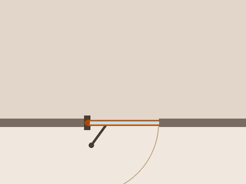
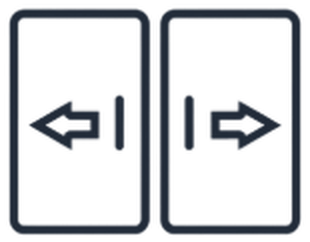

Automatic Swing Door
Automatic swing doors open and close by themselves, with a motor swinging the glass door leaf. PRO TEC supplies swing glass door operators for offices, hospitals, hotels and showrooms where a swinging door is needed.
- Motor-driven swinging glass door
- Single and double leaf options
- Motion sensor or push-button control

Overview
An automatic swing door uses an operator to swing the glass door leaf open and closed, so nobody has to push or pull it. It gives hands-free access where a hinged door is preferred over a sliding one.
We check the door frame, hinges and clearances before installation, then set the opening angle, speed and safety sensors to suit your entrance and test it before handover.
Where it is used
Types of operators for swing glass doors
Key features
Hands-free entry
The glass door opens and closes by itself.
Single or double leaf
Suitable for one door leaf or a pair.
Motion sensor or push button
Choose the activation that suits your entrance.
Safety protection
Sensors stop the door when someone is in the way.
Glass design
Clear, modern look that welcomes visitors.
Reliable service
Service and spares from our local team.
Specifications
| Door type | Automatic swing glass door |
|---|---|
| Operator options | Single-leaf and double-leaf |
| Activation | Motion sensor or push button |
| Safety | Obstruction sensing |
| Finish | Glass and frame options |
| Installation | Supply, installation and service by PRO TEC |
Other products

Automatic Sliding Door
Know more →Automatic Swing Gate
Know more →